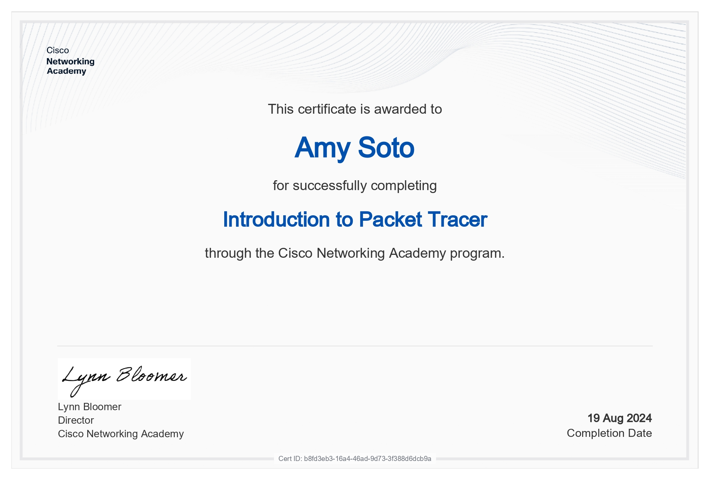
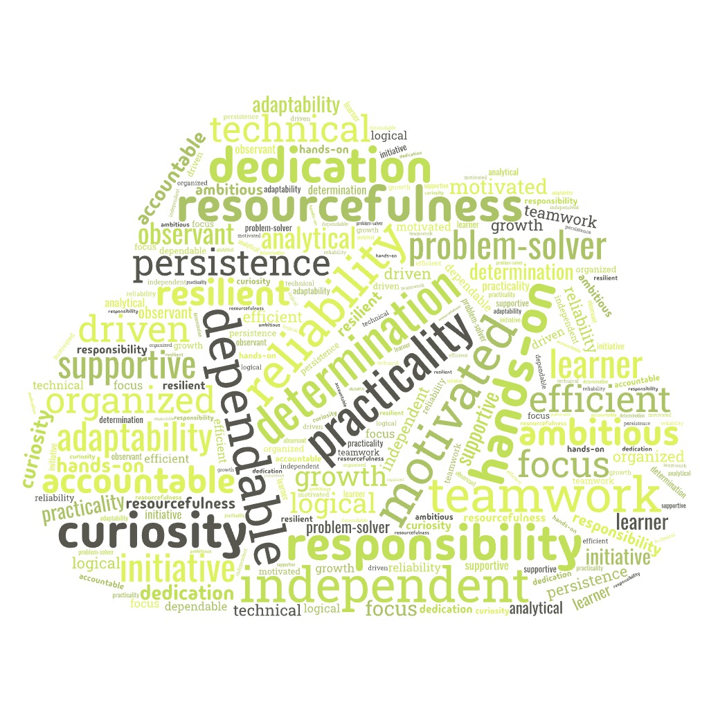

Hello, I'm Amy Soto
IT student passionate about networking, system support, and building real-world technical solutions.
About Me
Hi, I'm Amy, a student at Houston Community College in Texas, graduating in Spring 2026. I’m pursuing a career in IT with a strong focus on cybersecurity, where I’ve developed hands-on experience through labs, competitions, and personal projects.
I have practical knowledge in areas such as vulnerability assessment, network analysis, and log monitoring. I’ve worked with tools like Kali Linux, Splunk, Sysmon, and Nessus Essentials to build projects including a Mini SOC and a basic network scanner. I also actively participate in cybersecurity competitions, where I’ve strengthened my problem-solving skills and gained experience in cryptography and traffic analysis.
Outside of coursework, I continue learning through homelab projects, and staying up to date with current cybersecurity trends. I’m looking to apply my skills in an entry-level IT or cybersecurity role where I can grow, contribute, and gain real-world experience.
Skills
Programming & Scripting
Tools & Applications
Projects
Networking simulations using Cisco Packet Tracer focusing on routing, switching, and network design fundamentals.
Created a personal portfolio website built with HTML, CSS, and JavaScript to showcase my skills, projects, and experience.
Installed, set up, and configured a Mini SOC using Sysmon and Splunk for centralized log management and basic security monitoring.
Experience
Part-Time Gate Attendant
Legends Global - NRG Park
2026 - Present- Managed high-volume ticket sales and accurately handled cash/card transactions during major events at NRG Park.
- Welcomed guests professionally and supported overall event operations by maintaining a calm and approachable presence during peak times.
- Worked and supported team operations by communicating and working together to keep entry lines moving efficiently.
Student IT Support Technician
Elsik High School
2022 - 2023- Worked with school administrators and existing technology personal to maintain, troubleshoot, and support technology used in Elsik High School.
- Assisted with teachers and students withsetup and maintenance of classroom technology, including computers, Chromebooks, and printers, while resolving issues quickly or escalating when necessary.
- Provided hands-on support for classroom technology by fixing basic device issues, resetting accounts, and helping restore access to learning platforms during class time.
Education
Computer Systems Networking - Cybersecurity - Specialization, A.A.S.
Houston City College
2023 - 2026High School Diploma - General Studies
Elisk High School
2020 - 2023Certifications

Introduction to Packet Tracer
Introduction to Packet Tracer
_page-0001.jpg)
MS Windows Server 2019 Administration
MS Windows Server 2019 Administration

Introduction to Virtualization
Introduction to Virtualization
Achievements
NCL Competition - National Cyber League
Participated in a national cybersecurity competition, demonstrating strong problem-solving skills in cryptography, network traffic analysis, and vulnerability assessment. Using macOS, Kali Linux, and other tools, I achieved top rankings in practice and individual rounds, showcasing dedication and cybersecurity expertise.
Contact
amys0t0mar13@gmail.com
